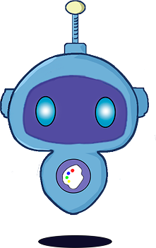
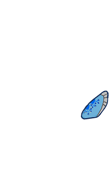
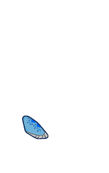
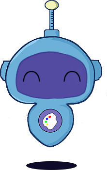
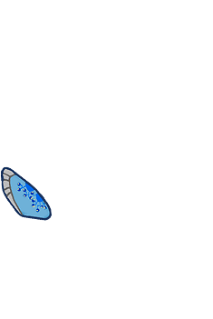
Diseño de interfaz e interacción
UX/UI · Arquitectura de información · Interacción digital
Herramientas: Investigación UX · Benchmarking · User personas · Wireframes · Prototipado en Figma · Diseño de componentes · Arquitectura de interacción
Universo Cecropia – Ritual Mortalis
Creación de universo conceptual · Instalación multisensorial · Sistema interactivo con Arduino, luces y diseño sonoro

🔍📖 Contexto del proyecto
Universo Cecropia es la expansión de un mundo conceptual previamente desarrollado en mi portfolio. En esta instancia exploramos el ritual central de la comunidad: Mortalis, la ceremonia realizada alrededor del Arbor Originis.
¿Qué ocurre en ese ritual?
Durante Mortalis, los cristales familiares se integran al Cristal Mayor de Memoria tras la muerte de Selen Aru, figura fundacional del universo.
¿Cómo se traduce eso en la instalación?
La instalación permitió que los participantes replicaran este ritual colocando cristales en la estructura. Cada interacción activaba una experiencia sensorial colectiva donde nuevas capas se sumaban al proceso de memoria compartida, combinando narrativa fantástica, materialidad orgánica y tecnología.
Para más información sobre el proyecto, realicé en dúo una documentación con procesos y materiales del equipo para la presentación académica: explorar presentación.
Rol y contribuciones
¿Cuál fue mi rol en el proyecto?
Participé en el desarrollo conceptual inicial y en la definición de la experiencia interactiva.
¿También trabajé en la producción?
Sí. Asumí además un rol de articulación dentro del equipo, organizando tareas y redistribuyendo responsabilidades cuando surgían conflictos. También colaboré en la recaudación de fondos y en la construcción de la instalación.
¿Qué implicó ese proceso?
Sostener simultáneamente desarrollo conceptual, programación, gestión de equipo y producción.

Bocetos y planificación digital
Bocetos de la web de cristales
Estos bocetos exploraban la estructura de navegación y la disposición de los cristales como sistema interactivo dentro del universo. Se ideó al inicio pensando en una infografía pero luego se cambió para hacerlo como minijuego de puzzle.
🔗 Ver boceto interactivo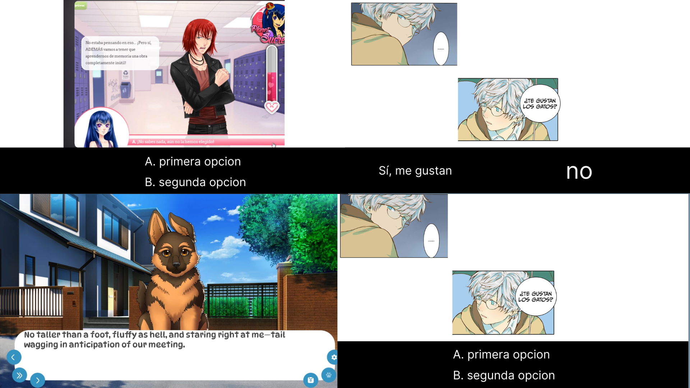
Asistencia técnica y guía para la web de novela gráfica
Para asistir a una compañera en la construcción de su web de novela gráfica, preparé referencias visuales y una estructura base en HTML que le permitió comprender cómo trasladar el diseño al código.
Bocetos iniciales de la web principal
Boceto realizado en Canva para explorar la estructura inicial del sitio y la jerarquía de sus secciones. En esta etapa la web estaba pensada como una página informativa sobre plantas del libro de herbolaria; con el avance del proyecto la idea de “web principal” se redefinió y terminó transformándose en una página de anuncio de la muestra.
Bocetos exploratorios de landing page
En esta instancia se definió que la web debía funcionar como calendario de actividades, pero esa función pasó al rol de redes, por lo que estas ideas se descartaron. Se realizaron bocetos en Figma junto a una compañera para explorar posibles estructuras de landing page, aunque finalmente el grupo decidió que la web principal sería completamente ilustrada.
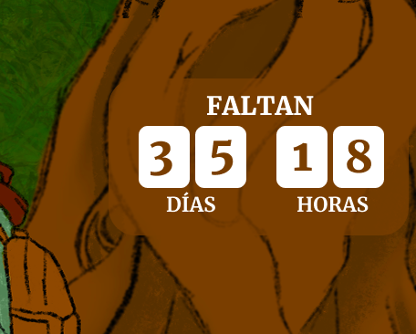
Boceto de contador para web principal
Desarrollé un boceto de contador para la web principal, integrado visualmente al árbol con una estética natural. Su función era contar los días hasta la muestra y, al finalizar, revelar la fecha y el aula donde se realizaría la ceremonia, reforzando la sensación de espera antes de ingresar al universo Cecropia.
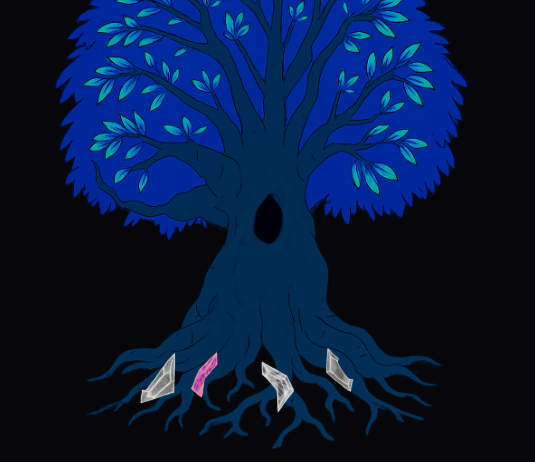
Boceto del proyecto final digital
En este boceto fue una interacción web para simular como sería las interacciones con el teclado mostrando de manera visual lo que ocurriría.
CONTROLES: 1,2,3,4 cristales. a,b,c,d posición donde se quiere colocar.
🌐 Probar simulación interactivaPlanos y diseño estructural
La instalación fue diseñada a partir de planos estructurales que definían la altura total, el radio de la base y la disposición de los cristales interactivos. El árbol alcanzó aproximadamente dos metros de altura y fue construido para permitir la participación simultánea de varias personas, organizando la interacción de forma secuencial alrededor de la estructura.
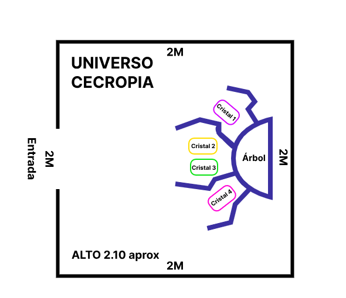
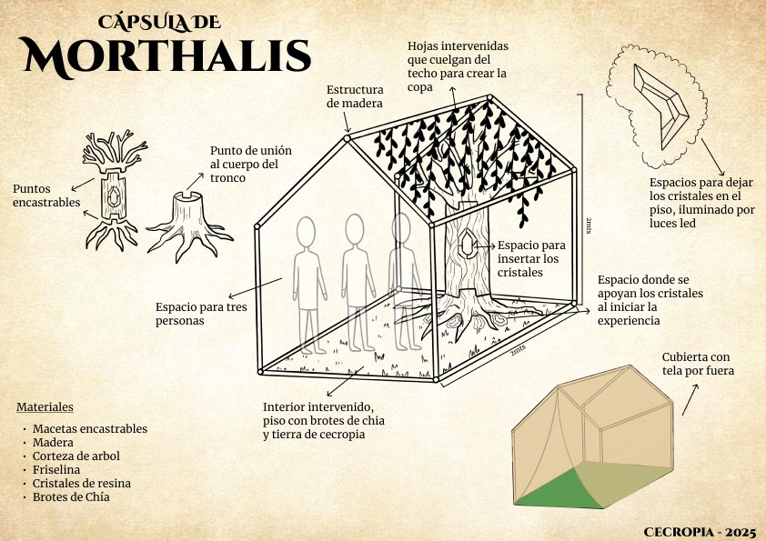
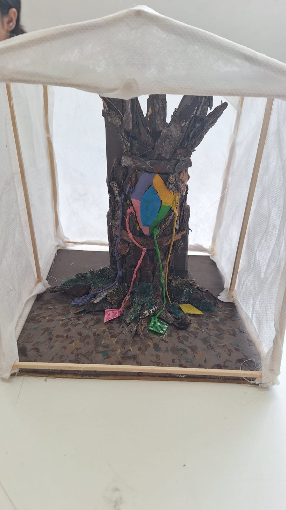
Proceso de construcción e instalación
Durante la etapa de materialización participé activamente en la construcción del árbol y en la resolución espacial de la instalación. El trabajo incluyó la realización de troncos y ramas, corte y pegado de materiales, pintura, creación de moldes y la integración de la corteza con los botones o cristales interactivos. También trabajé en la definición del radio y la disposición entre los cristales para asegurar una interacción cómoda para los participantes dentro del espacio.
La experiencia fue diseñada para activar distintos sentidos del visitante mediante luces internas que respondían a la interacción, capas sonoras progresivas que se armonizaban colectivamente, texturas orgánicas en la superficie del árbol y un aroma vegetal que reforzaba la atmósfera ritual de la instalación.
Proceso del arbol
En el proceso del arbol se pintó de marron y se fue pegando con corteza y silicona hasta cubrir todo. Participé activamente en la construcción estructural del árbol, corte y aplicación de corteza, pintura, moldes y resolución espacial de los cristales.
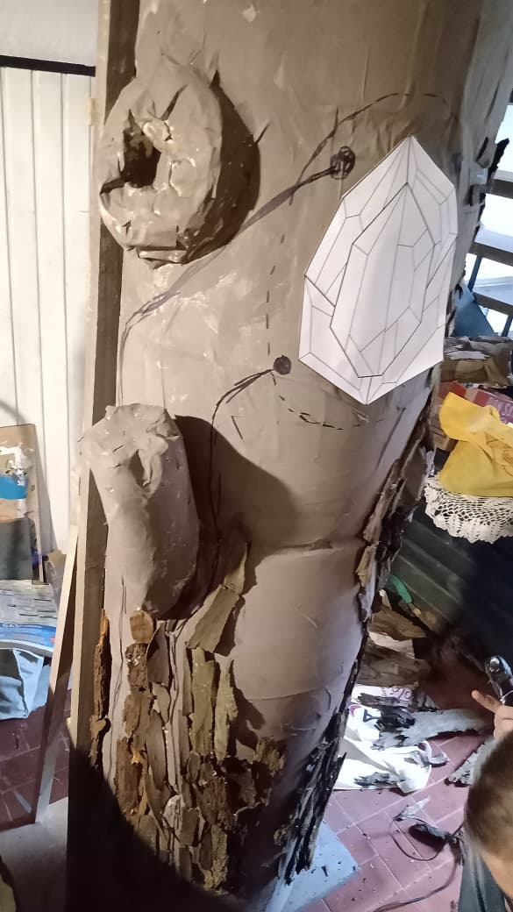
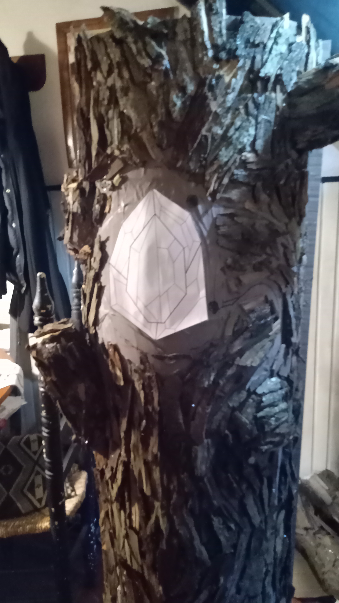
Proceso de ramas y troncos
Se comenzo utilizando un cartón simulando la figura de una rama, utilizamos botellas de plastico colocando tres como base dependiendo del grosor, en algunas solo se utilizó una, y el largo con más botellas individuales rellenando los huecos con papel, luego se cubrio con papel film y cinta de embalsar. Al terminar, se colocaba cartapesta, para pintarla y luego pegarle con silicona los pedazos de corteza.
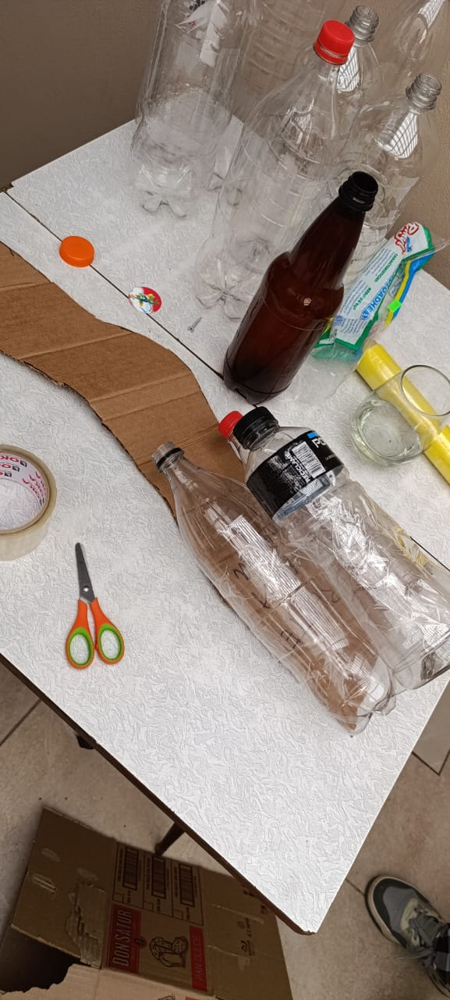
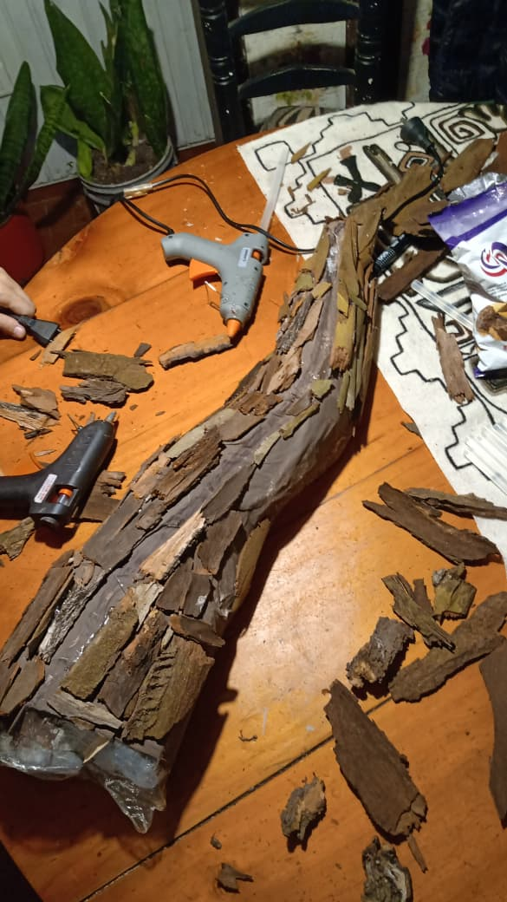
Luego de ya tener terminadas y esperan a que sequen se aprovecho de realizar ramas pequeñas para la parte superir del arbol, hecho con alambres y otros materiales que decidieron mi grupo. Como base tiene una placa de madera facilitando que sea sencillo de montar y desmontar solo desartornillando. Me encargue de pintar y colocar más corteza.
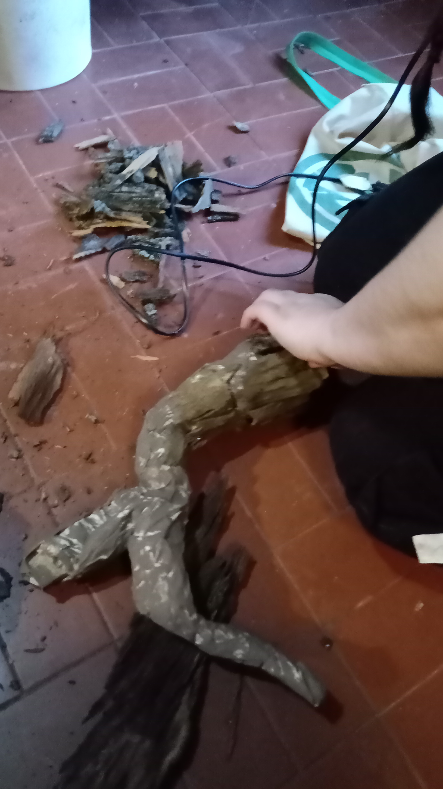
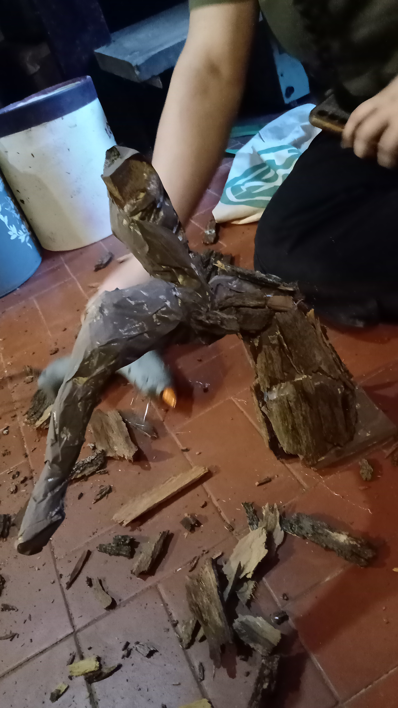
Proceso de botones y frutas
Se realizaron los moldes de los botones con cartón junto los cables de arduino y los cristales verificando los tamaños, se hicieron huecos para que los cables puedan pasar bien. Se pintó y se cubrió de corteza. En cuanto las frutas del arbol, se realizaron un par de cada fruto. Me encargué de pintar el color base.
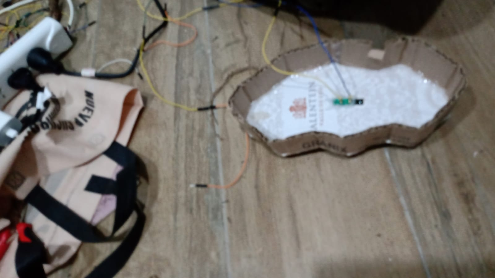
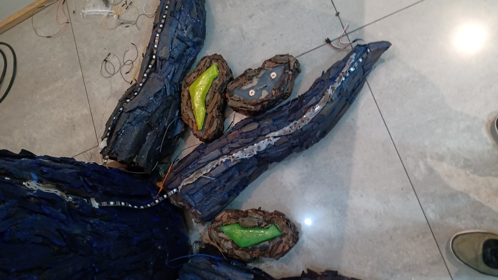
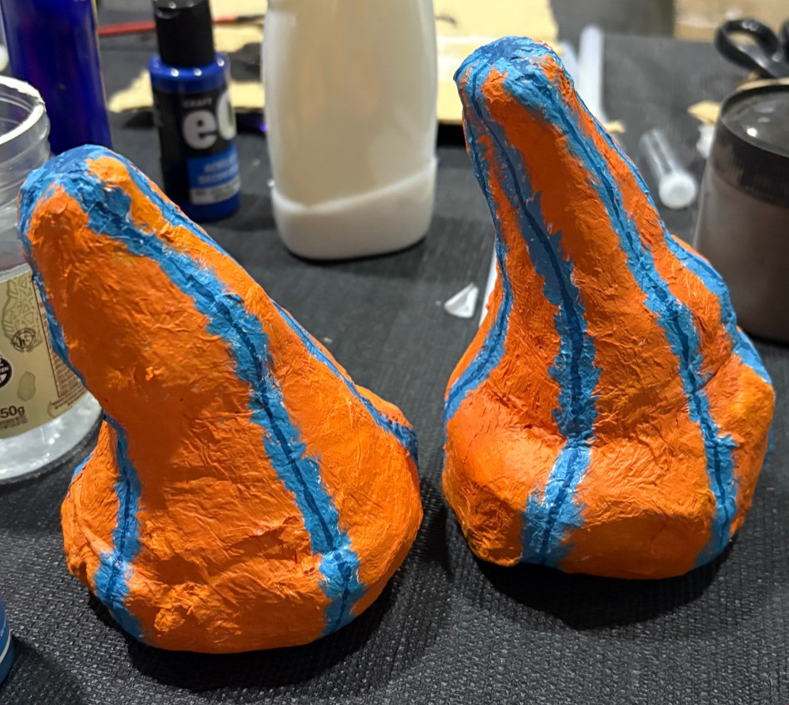
Sistema interactivo
La instalación funcionaba mediante cristales conectados a Arduino que activaban cambios de luz y capas sonoras dentro del Arbor Originis. Cada interacción del público sumaba una nueva capa a la composición colectiva del ritual.
En la etapa final implementé el sistema sonoro utilizando Processing, adaptando y optimizando los archivos de audio desarrollados por una compañera para su funcionamiento en tiempo real. Durante la muestra realicé pruebas de sonido, ajustes de volumen y monitoreo técnico para resolver fallos de comunicación entre hardware y audio.
Prueba técnica del sistema
Ensayo previo de integración entre Arduino, luces LED y sistema sonoro. Este test permitió verificar la respuesta de los cristales y ajustar la sincronización entre interacción física y sonido antes de la instalación final.
Interacción del público
Durante la exhibición los visitantes podían participar del ritual colocando cristales en el árbol. Cada interacción activaba luces y capas sonoras que se acumulaban colectivamente.
Registro final de la instalación
Vista general del espacio expositivo y de la instalación completa del Arbor Originis dentro de la cabina ritual.
Resultado final de la instalación
El Arbor Originis funcionó como el núcleo de la experiencia ritual del universo. Los participantes debían colocar cristales en su estructura, activando progresivamente las luces internas y el sistema sonoro. A medida que el árbol se completaba, la instalación respondía con cambios lumínicos y sonoros que marcaban el avance colectivo del ritual, transformando la participación individual en una experiencia colectiva dentro del universo Cecropia.
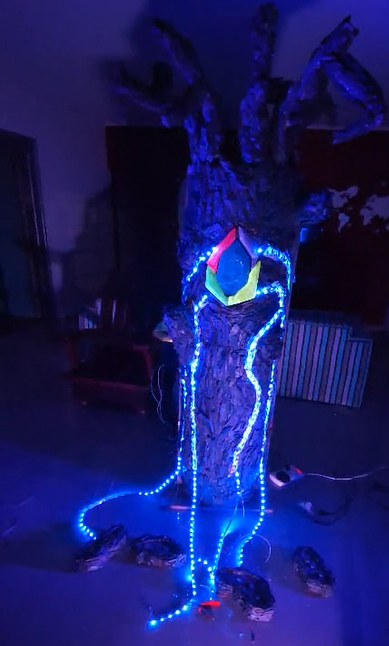
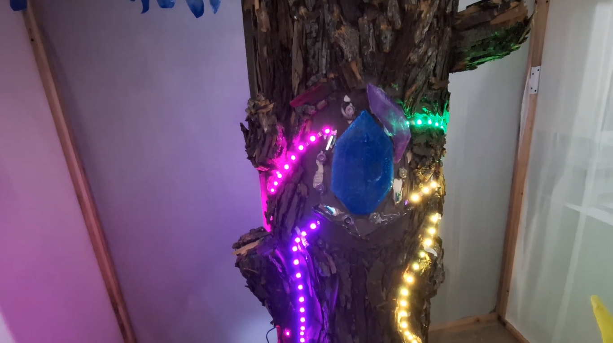
👓 Aprendizajes
Este proyecto implicó trabajar simultáneamente en dimensiones conceptuales, técnicas y humanas. Más allá del diseño del universo y la interacción, el proceso exigió una adaptación constante frente a imprevistos técnicos y organizativos.
La experiencia permitió integrar distintas áreas del diseño interactivo, combinando diseño narrativo y construcción de universos con el desarrollo de experiencias multisensoriales. También involucró programación web aplicada a proyectos conceptuales, la integración entre software, hardware (Arduino) y sonido, así como la construcción material de la instalación y la gestión de trabajo dentro de un equipo creativo.
Universo Cecropia no fue solo una instalación, sino la construcción de un sistema narrativo, espacial y tecnológico que logró activarse colectivamente a través de la participación del público.
Webs del proyecto
Web del proyecto
Sitio desarrollado en Canva que documenta el universo Cecropia y el proceso del ritual Mortalis.
Ver sitio →Web de cristales
Sitio desarrollado para realizar un minijuego de los cristales para preparar a los usuarios a tener una referencia de cómo debe colocar los cristales. Al terminar revela el instragram de Selen.
Visitar →Web de novela gráfica
Sitio desarrollado para contar mediante ilustraciones la historia de las protagonistas.
Visitar →Documentación
📄 Construcción del universo Cecropia
Documento inicial donde se desarrolla el universo ficticio de Cecropia. Se exploran las reglas del mundo, su relación con la naturaleza y el sistema de salud basado en plantas medicinales.
Abrir PDF →📄 Concepto del mundo y problemática
Investigación conceptual que plantea el origen del universo: una sociedad que, tras depender excesivamente de la inteligencia artificial, vuelve a la medicina natural y al trabajo comunitario para recuperar su salud y sus vínculos sociales.
Abrir PDF →📄 Exploración de eventos y rituales
Documento de ideación donde se exploran distintos eventos dentro del universo Cecropia, como rutinas diarias, cosechas y ceremonias comunitarias. Estas escenas ayudan a construir la cultura y las prácticas de la sociedad.
Abrir PDF →📄 Diseño narrativo del ritual Mortalis
Desarrollo del ritual central del proyecto. Se describe la ceremonia en honor a Selen Aru, los vínculos entre los participantes y los elementos simbólicos que construyen la experiencia multisensorial alrededor del Gran Árbol.
Abrir PDF →Sonidos del proyecto
🎧 Música ambiente
Abrir en una ventana →🎧 Sonido del primer cristal
Abrir en una ventana →🎧 Sonido del segundo cristal
Abrir en una ventana →🎧 Sonido del tercer cristal
Abrir en una ventana →🎧 Sonido del cuarto cristal
Abrir en una ventana →🎧 Sonido de encastre (feedback)
Abrir en una ventana →Universo Cecropia
Creación de universo conceptual · Instalación multisensorial · Dispositivo interactivo con Arduino
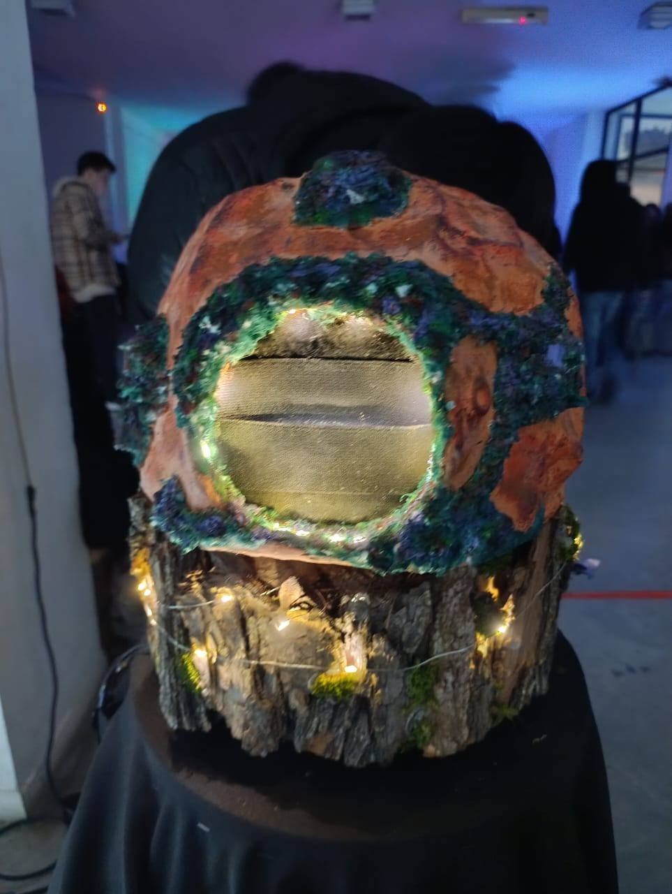
🔍📖 Sobre el proyecto
Cecropia es un universo futurista que nace a partir de una crisis sanitaria y social: la dependencia
excesiva de la tecnología y la pérdida de conexión con la naturaleza.
En este mundo, la medicina tradicional deja de ser efectiva debido a la resistencia bacteriana,
lo que obliga a la humanidad a volver a las plantas, al cultivo propio y a una forma de vida más
consciente y orgánica.
El proyecto comenzó como una construcción conceptual, pero evolucionó hasta convertirse en una
instalación interactiva multisensorial presentada en una muestra.
Construcción del universo
El universo fue desarrollado a partir de categorías sensoriales: vista, tacto, olfato, gusto y oído. También trabajamos arquitectura, indumentaria, clima y naturaleza como un sistema integral.
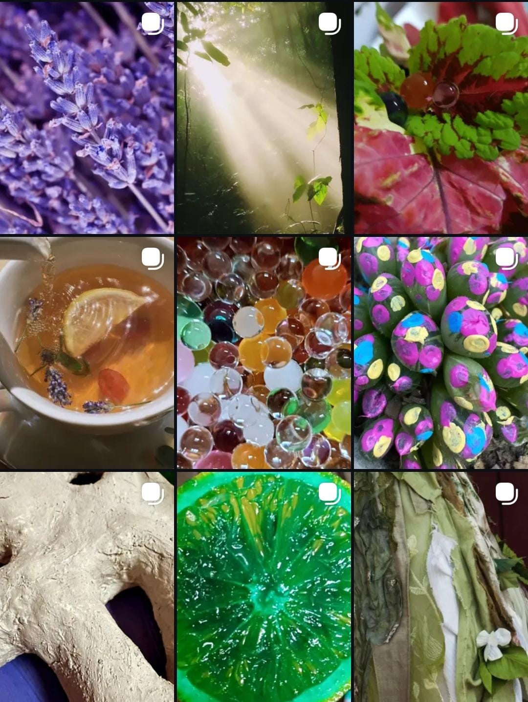
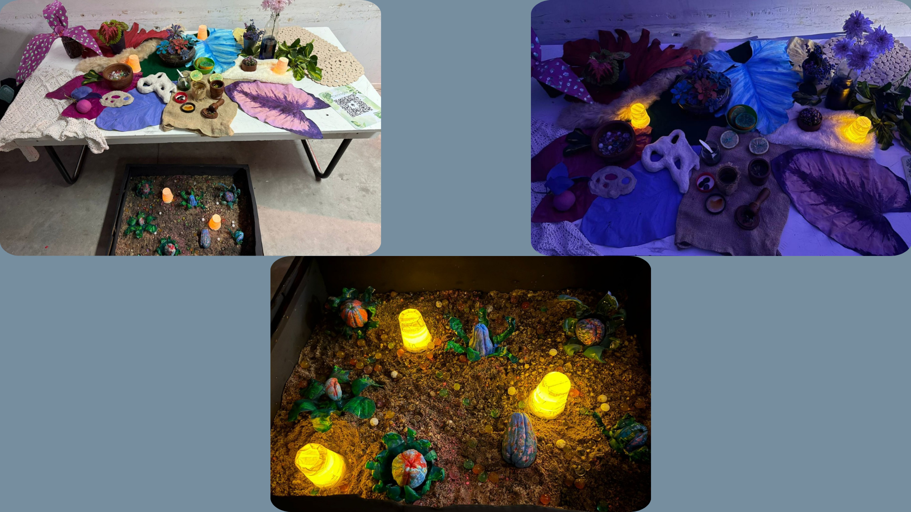
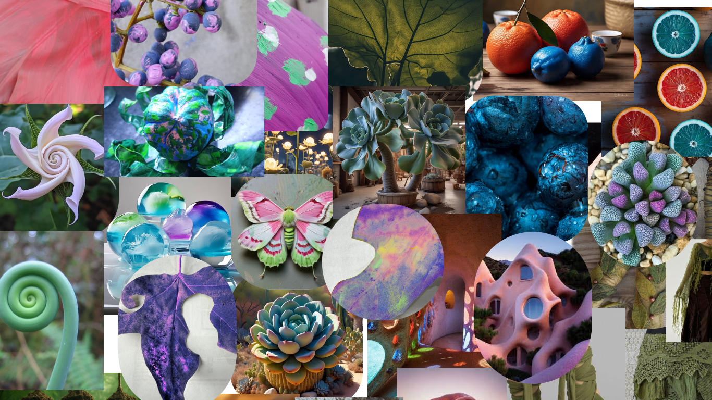
En la exploración sensorial las categorías sensoriales fueron desarrolladas visual y
materialmente,
explorando texturas, colores, aromas y estímulos físicos que luego
formaron parte de la instalación final.
La estética se aleja del futurismo tecnológico tradicional y propone un futuro orgánico. Se trabajaron
formas curvas, materiales naturales y una arquitectura inspirada en que la naturaleza forma parte central
de la vida cotidiana.
La intención fue construir un mundo coherente, donde cada elemento —desde la textura de la ropa hasta el
clima— respondiera a la misma lógica narrativa.
Ideación del dispositivo interactivo
El proyecto se materializó en un dispositivo interactivo programado con Arduino. El sistema utilizaba sensores para detectar la interacción del usuario y activar distintos estímulos dentro de la experiencia. La actividad estaba pensada para realizarse en parejas: una persona introducía la mano dentro del terrario sin poder ver el interior, mientras la otra observaba a través de un orificio lateral y debía guiarla. Dentro del terrario había frutos que debían colocarse sobre puntos de luz. Cuando todos los puntos eran cubiertos correctamente, el sistema activaba un estímulo final liberando un aroma dentro del dispositivo.
Durante el desarrollo también se realizaron distintos esquemas y diagramas para definir la interacción del usuario, la lógica del sistema y la estructura física del dispositivo. Estos materiales sirvieron como guía para planificar el funcionamiento del artefacto y su construcción.
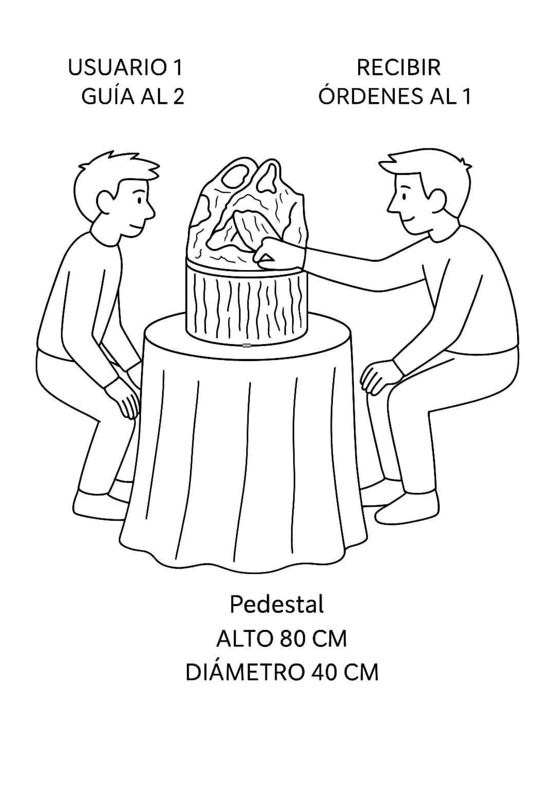
Interacción del usuario
La persona introduce su mano en el terrario sin ver el interior mientras otra observa y la guía. También muestra la altura del pedestal en relación al cuerpo del usuario.
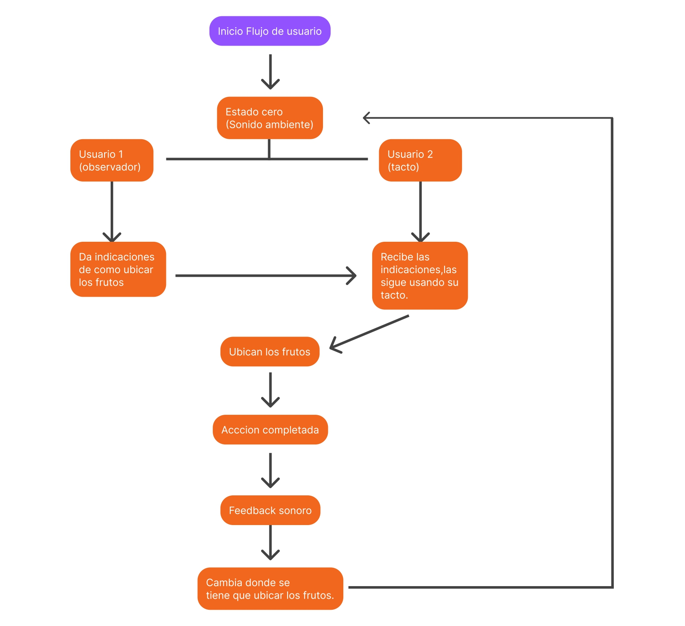
Flujo de interacción
Diagrama que representa el recorrido que el usuario debe realizar y la secuencia de activación de los estímulos dentro del sistema.
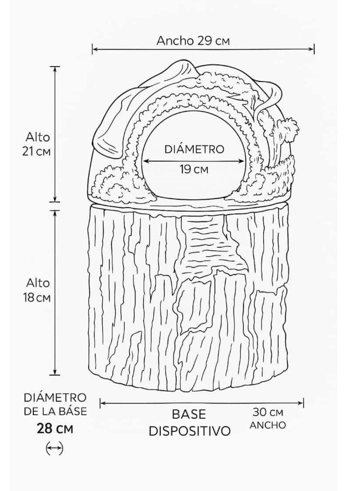
Plano del dispositivo
Plano con las medidas generales del artefacto y la organización de sus partes para la construcción física.
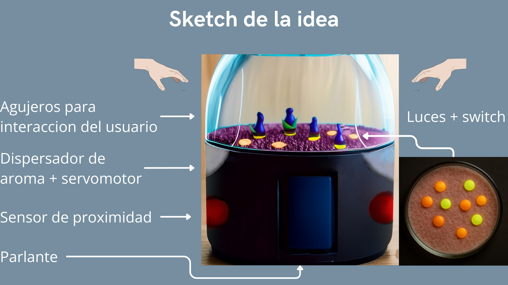
Esquema técnico
Diagrama que señala los sensores y componentes electrónicos utilizados dentro del dispositivo interactivo.
Modelado 3D del dispositivo
Para visualizar mejor cómo sería el dispositivo antes de su construcción, realicé un modelo 3D preliminar que nos permitió discutir proporciones, disposición de elementos y posibles recorridos de interacción. El modelo no formaba parte obligatoria del proyecto, sino que lo desarrollé como una herramienta de exploración para compartir con el equipo y tener una referencia visual más clara del artefacto.
Exploración del dispositivo en 3D
Modelo realizado por mí en Blender para visualizar la estructura del dispositivo, la cúpula y la distribución general de los elementos antes de comenzar la construcción física.
Modelo interactivo
Versión interactiva del modelo 3D que permite explorar el dispositivo desde distintos ángulos para entender su forma y organización espacial.
Visualización del dispositivo completo
Representación final del proyecto generada a partir de imágenes mediante una herramienta web de reconstrucción 3D. Este modelo permitió mostrar una versión aproximada del resultado final con colores y composición general del dispositivo.
Desarrollo de materialidad
Mi rol principal fue el desarrollo de la materialidad del universo, enfocándome en traducir el concepto
en decisiones físicas concretas.
Trabajé sobre cómo debía sentirse y verse este mundo en términos reales: qué materiales usar, cómo
resolver las uniones, cómo sostener los elementos y cómo lograr que lo orgánico no perdiera estabilidad
estructural.
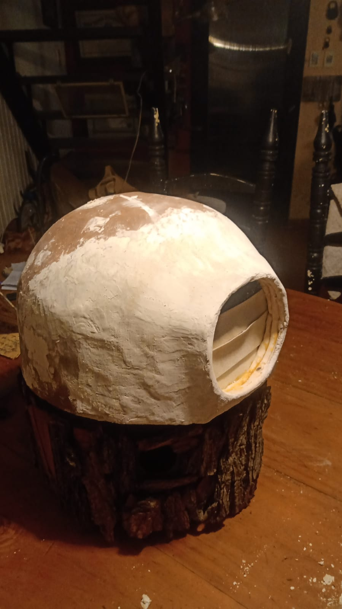
Construcción de la cúpula
Para la estructura principal realizamos una cúpula utilizando yeso como material base, tomando una forma circular plástica como molde. Luego la pintamos en tonos marrones para simular arcilla, reforzando la identidad orgánica del universo. Participé activamente en la construcción y acabado de esta pieza, buscando que la textura y el color transmitieran una sensación natural y artesanal.
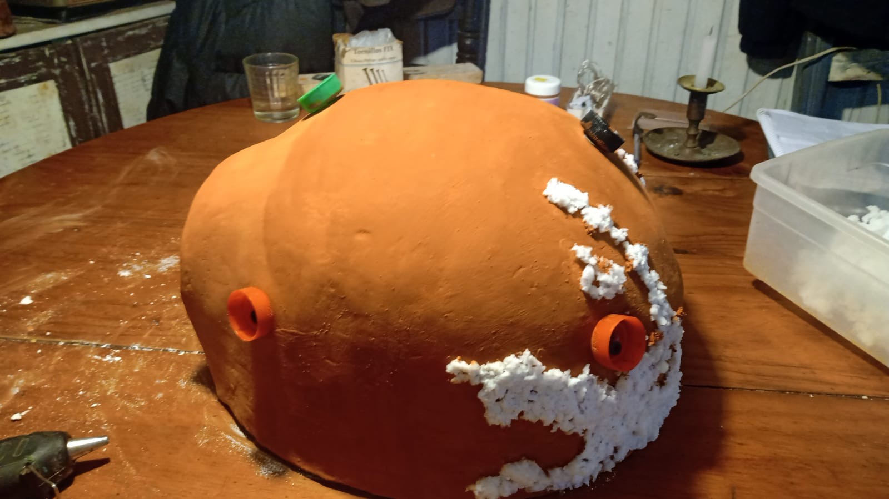
Sistema para flores y vegetación
Hubo complicaciones al colocar las flores, ya que era difícil unir plástico con yeso. Por eso propuse usar tapas de botellas como base, fijadas con tornillos. El sistema funcionó, así que cubrimos las tapas con musgo artificial hecho con esponjas cortadas y pintadas en tonos verdes y violetas. Esta solución combinó funcionalidad y estética, resolviendo un problema técnico sin perder coherencia visual con el proyecto.
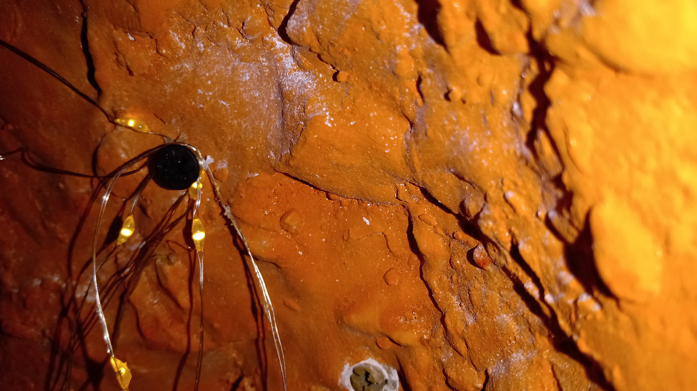
Iluminación interior
También me ocupé de pensar la iluminación interna de la cúpula. Propuse sujetar las tiras de luces mediante un sistema de tornillo central que permitiera enrollarlas en múltiples vueltas dentro de la estructura, asegurando una distribución uniforme de la luz. La intención era que el interior quedara bien iluminado sin que la fuente de luz fuera invasiva o visible desde el exterior.
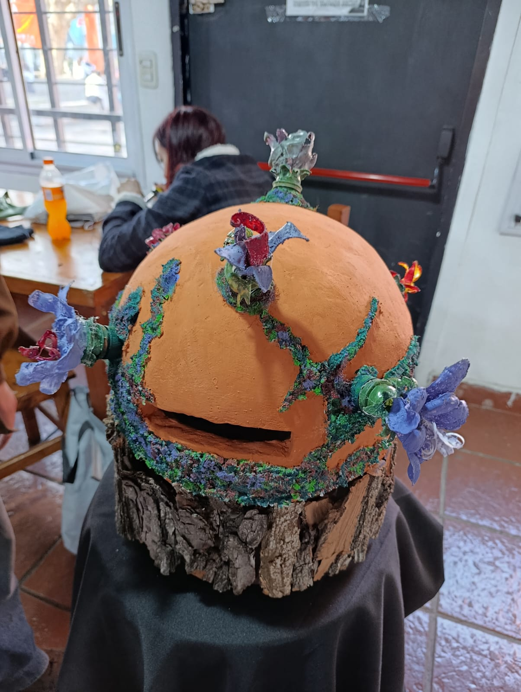
Sistema práctico de encastre
La cúpula contiene musgo, tapas, flores y la pintura terminada. Diseñé el sistema para que las flores conservaran la rosca de la tapa, permitiendo encastrarlas simplemente girándolas en la base. Esto facilitaba desmontarlas sin dañar el yeso y permitía transportar la estructura con menor riesgo de rotura. La solución fue pensada desde lo práctico y la durabilidad.
Iluminación exterior y detalles
Incorporé luces LED a pilas en el exterior, fijadas manualmente con cinta, para reforzar el carácter orgánico y generar un efecto decorativo por debajo de las flores. Aunque era un detalle pequeño, ayudó a darle más profundidad visual y presencia en la muestra.
Olfato y gusto
Realice pruebas de aroma mezclando elementos como romero, menta y alcohol hasta que el aroma de naranja con alcohol fue elegida ya que combinaba lo dulce y lo natural. En el gusto se hizo una tierra comestible de colores. A partir de esa base propuse incorporar golosinas (Bulldogs y Jelly Beans) para que el público pudiera interactuar.
Lianas de hojas
Recorté pequeños fragmentos de papel que luego pinté en tonos verdes y oscuros, creando unas lianas buscando equilibrar la composición ya que visualmente el conjunto estaba quedando demasiado marrón intentando darle más vegetación. Finalmente no se utilizaron por decisión de los profesores, ya que el material se percibía claramente como papel.
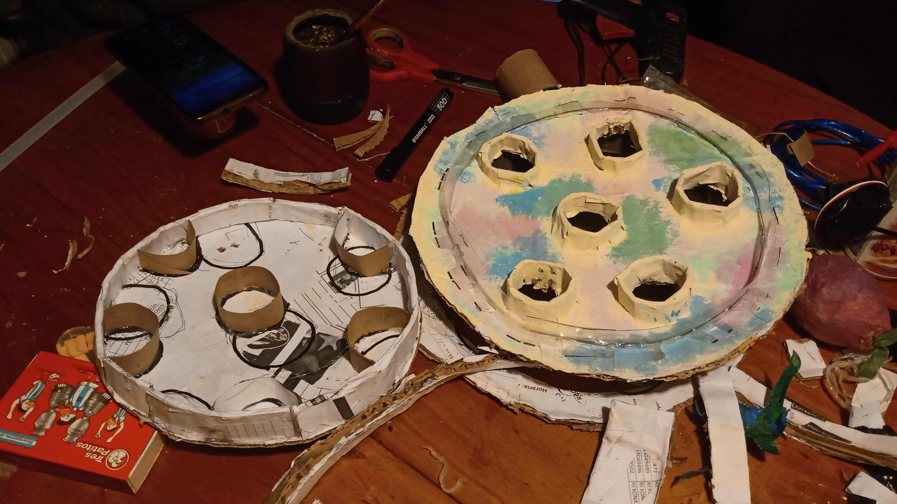
Sistema de piso y sensores
En prototipo se realizó un piso sin perforaciones y pequeño, lo que no funcionó. El equipo construyó finalmente la versión con agujeros, como había planteado en el inicio. Los sensores de luz del Arduino necesitaban que ingresara luz desde el suelo para activarse. Para evitar que los frutos se caigan, propuse una lámina de acetato como soporte.
👓 Reflexión y aprendizaje
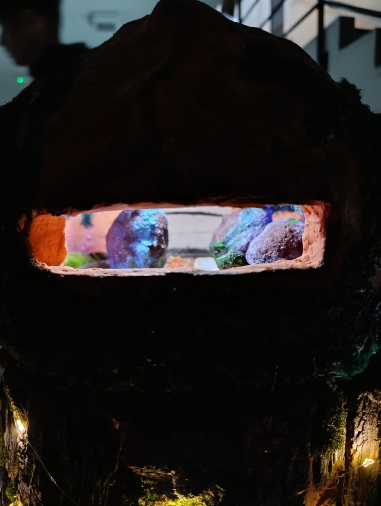
Trabajo colaborativo
Fue una experiencia importante de trabajo en equipo, donde fue necesario adaptarse a cambios y asumir
responsabilidades en áreas distintas a las previstas. Aunque mi rol principal estaba vinculado al
desarrollo de la materialidad, también participé en otras áreas del proyecto.
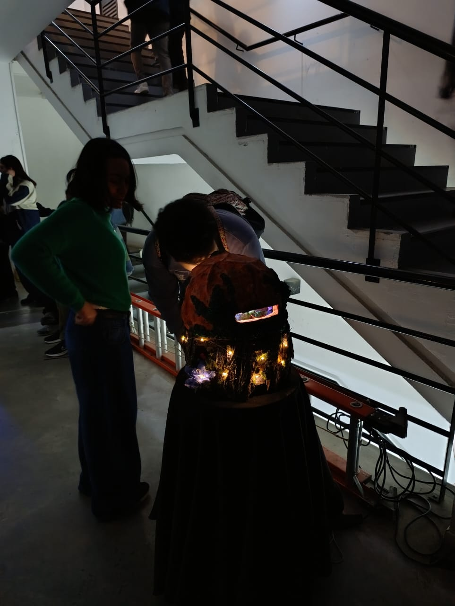
Construcción del universo Cecropia
A nivel personal, el proyecto me permitió experimentar cómo un concepto narrativo puede traducirse en
decisiones materiales, técnicas y sensoriales. Uno de los aspectos que más me interesó fue el proceso
de construir un universo coherente.
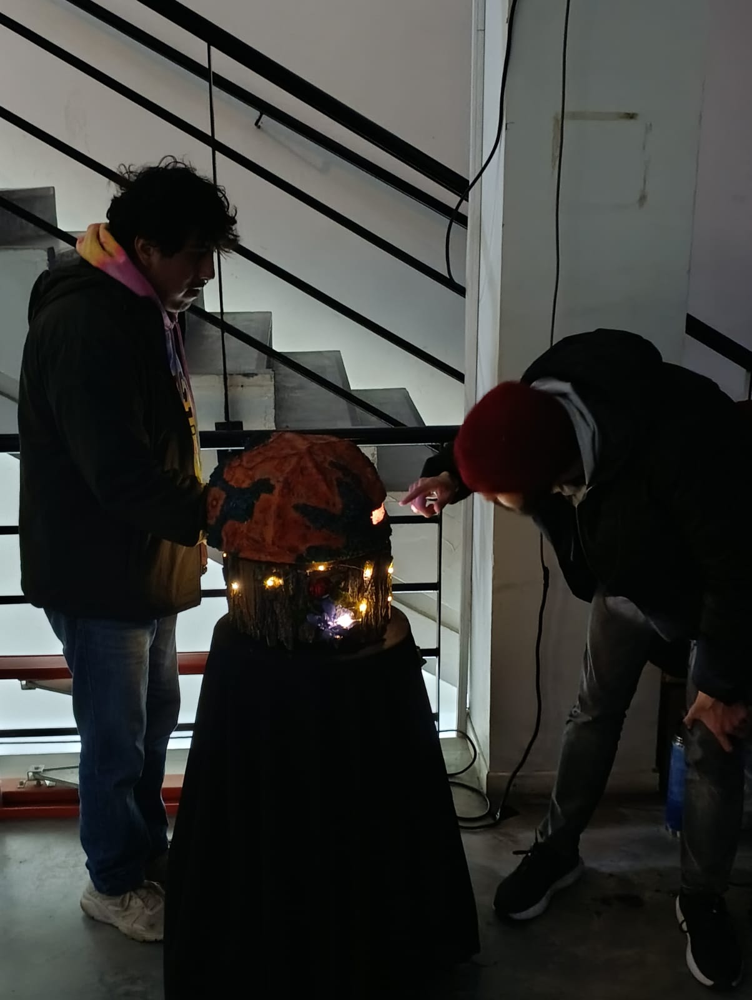
Interacción entre participantes
Durante la muestra fue muy interesante observar cómo las personas interactuaban con el dispositivo. La
experiencia estaba pensada para realizarse en parejas, y era gratificante ver sus reacciones y
emociones, especialmente en quien introducía la mano sin poder ver.
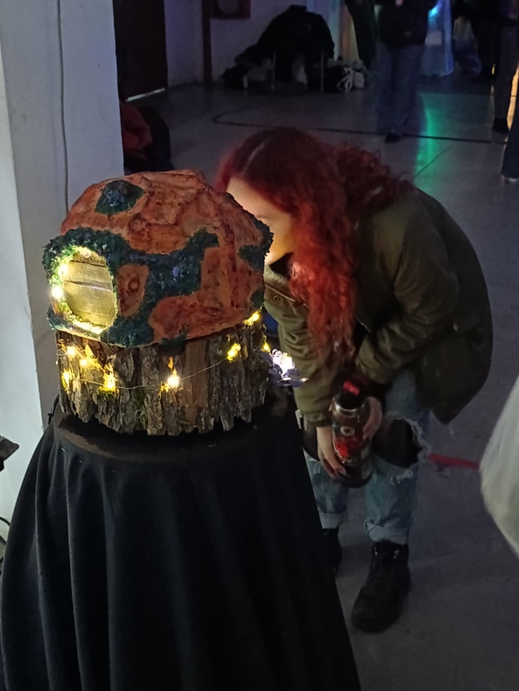
Prototipado y aprendizaje
El proceso de construcción y prototipado fue clave para comprender cómo las ideas se transforman en
experiencias concretas y cómo cada etapa del diseño contribuye a una experiencia significativa.
Documentación completa
A continuación se incluyen algunos documentos utilizados durante el desarrollo del proyecto, que muestran el proceso de investigación, construcción del universo y diseño del dispositivo interactivo.
📄 Exploración inicial del universo
Documento de ideación donde se exploran distintos escenarios posibles para el futuro de la humanidad. A partir de estas hipótesis se comienza a construir el punto de partida conceptual del universo Cecropia y su relación con la naturaleza, la tecnología y la medicina.
Abrir PDF →📄 Ficha del universo Cecropia
Documento de análisis donde se definen las bases del universo ficticio: contexto histórico, geolocalización, mensaje conceptual y características del entorno. Se describen aspectos como el ambiente, la alimentación, la arquitectura y el vínculo entre humanos, naturaleza y tecnología.
Abrir PDF →📄 Propuesta conceptual del universo Cecropia
Desarrollo conceptual del universo donde se profundiza en la experiencia multisensorial del entorno. El documento explora cómo el tacto, el olor, el sonido y el gusto forman parte de la vida cotidiana dentro de este mundo basado en plantas medicinales y conexión con la naturaleza.
Abrir PDF →📄 Diseño del dispositivo multisensorial
Documento técnico que explica el diseño del dispositivo interactivo desarrollado para representar el universo Cecropia. Incluye el uso de sensores, iluminación, aromas y programación con Arduino para generar una experiencia multisensorial vinculada al cultivo de plantas.
Abrir PDF →📄 Presentación final del proyecto Cecropia
Documento de entrega final del trabajo práctico donde se sintetiza el universo Cecropia y su desarrollo conceptual. Incluye descripciones del entorno, arquitectura, clima, indumentaria, experiencias sensoriales y registros del proceso del proyecto.
Abrir PDF →Cinépolis
Instalación interactiva · Infografía lúdica · Trivias sobre Deepfake
Contexto y objetivo
Instalación interactiva tipo cabina de cine que informa y genera reflexión sobre Deepfake en el cine.
Concepto de experiencia
Menú interactivo no lineal. El usuario aprende mediante actividades como trivias y juegos interactivos.
Núcleos interactivos
Cinco núcleos sobre diferentes aspectos del Deepfake. Los usuarios exploran libremente con botones numéricos.
Componentes
Se diseñaron distintos componentes interactivos para guiar el recorrido del usuario dentro de la experiencia. Entre ellos se incluyen trivias, preguntas de verdadero o falso, carruseles informativos y selección visual de imágenes (deepfake vs originales). Cada componente busca reforzar el aprendizaje mediante la interacción y mantener una navegación dinámica dentro de los distintos núcleos de contenido.
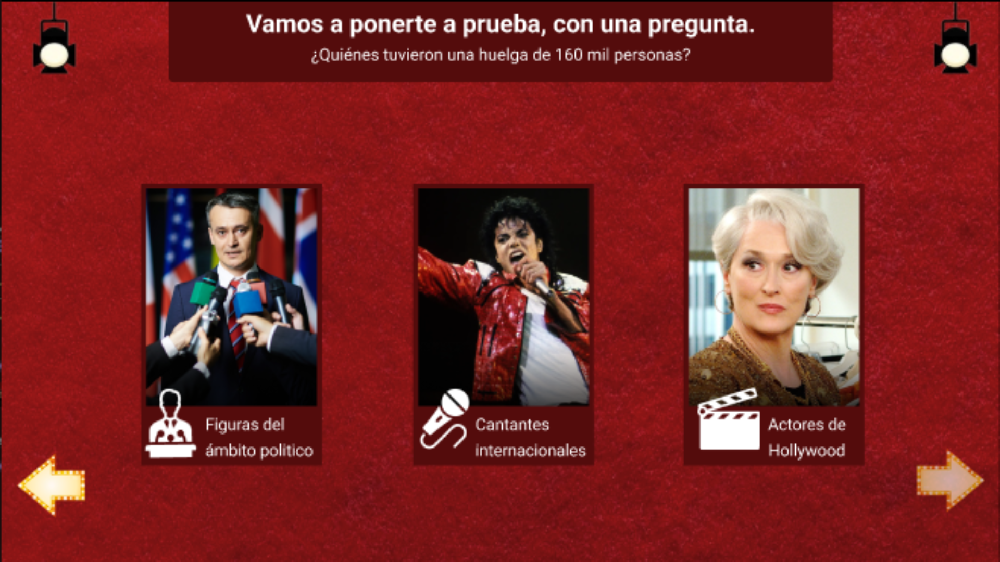
Trivias donde el usuario debe adivinar con información ya dada anteriormente. Se evalua al usuario si ha entendido el contenido informativo.
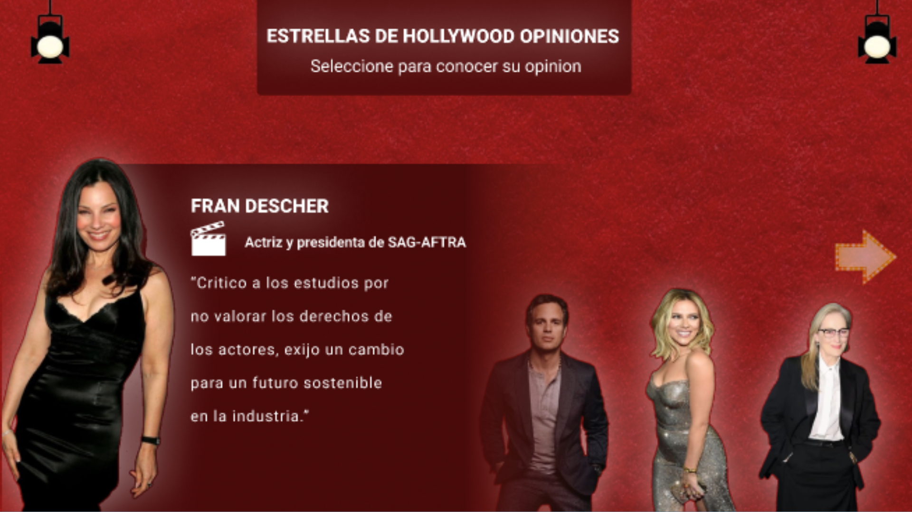
Figuras famosas con datos despegable en el lateral, se agrandan a medida que avanzas, permite que el usuario se ubique, los inactivos se vuelven a su estado inicial.
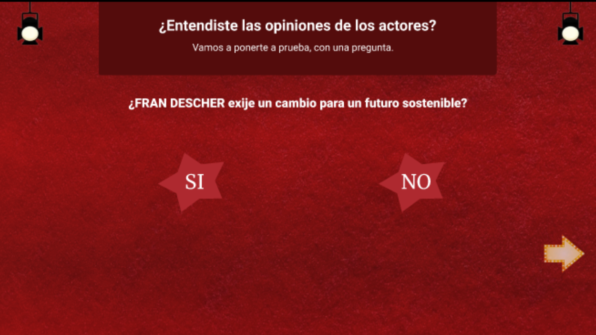
Pregunta con respuesta interactiva para evaluar al usuario o desafiar si ha entendido el contenido informativo del núcleo.
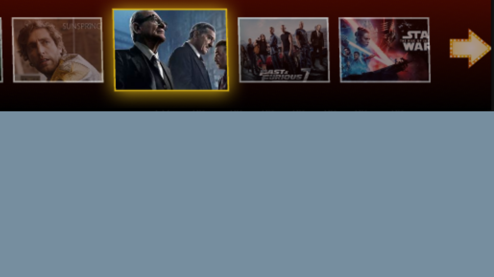
Recurso de carrusel para moverse mediante los botones mientras se muestra información arriba del carrusel por cada tema elegido.
Pequeño cartel en el inicio de cada nucleo donde da un mini instrutivo de los controles.
Orden de información en una claqueta, gif de muestra y una ruleta interactiva con animaciones donde va girando con distintos temas moviendo con los botones a la izquierda o derecha.
Feedback
Las interacciones incorporan distintos tipos de feedback visual para confirmar las acciones del usuario y reforzar la comprensión del contenido. Se utilizan indicadores de correcto o incorrecto, mensajes visuales, cambios de estado y animaciones que guían el avance dentro de cada núcleo y comunican cuándo una actividad fue completada.
Feedback de correcto o incorrecto, permitiendo saber al usuario si se ha equivocado o acertado. Con iconografia visual y colores distintivos.
Feedback de ilustración con mensaje de felicidades o contención permitiendo que el usuario se informe si ha acertado o equivocado.
Secuencia animada de flechas que inicia inactiva. El usuario no puede avanzar hasta completar el núcleo. Una vez finalizado, la flecha se activa con mayor opacidad y una animación indicando que ya puede continuar.
Diseño con enfoque visual del cine con butacas, pensado en utilizar porcentajes, pregunta y adivinanza.
Pregunta para que el usuario de su opinión y se le otorgue un porcentaje e información de demás usuarios que han votado.
🛠️ Resolución de problemas
Durante la muestra, los sensores (teclas de la computadora) eran demasiado sensibles y provocaban múltiples activaciones al presionarlos. Sin acceso al código original ya que no era mi rol, implementé un script en AutoHotkey que detecta cada pulsación y agrega un retardo de 3 segundos, eliminando la sensibilidad excesiva y garantizando el correcto funcionamiento de la experiencia.
🍿 Promoción
Para generar interés durante la muestra propuse una pequeña estrategia para promocionar. El equipo utilizó vestimenta temática (vestimenta roja y vinchas de pochoclos) para llamar la atención del público mientras recorríamos la institución.
La idea era generar curiosidad visual antes de que las personas vieran la instalación. Esto funcionó como una forma simple de promoción: muchas personas se acercaban a preguntar de qué se trataba el proyecto.
También se repartieron pequeñas bolsitas de pochoclos y stickers para reforzar el concepto de cabina de cine y atraer visitantes hacia la experiencia.
☝🤓 Aprendizajes del proyecto
Este proyecto implicó diseñar una experiencia interactiva pensada para un contexto físico real, combinando arquitectura de información, diseño de interacción y componentes lúdicos para explicar el fenómeno del deepfake de forma accesible. Durante el proceso también fue necesario adaptarse a situaciones propias de una instalación en exhibición, resolviendo problemas técnicos y ajustando la experiencia para garantizar su funcionamiento durante la muestra. Más allá de la interfaz, el proyecto permitió pensar la interacción como parte de una experiencia espacial y participativa, donde el público descubre y explora los contenidos a través del juego y la participación directa.
Documentación completa
A continuación se incluyen algunos documentos utilizados durante el desarrollo del proyecto. Estos materiales muestran el proceso de investigación, conceptualización y planificación de la instalación interactiva.
📄 Documentación
Documentos de investigación, conceptualización y planificación de la instalación interactiva.
Propuesta conceptual
Documento inicial donde se desarrolla la idea del proyecto Cinépolis, una cabina de cine interactiva pensada para informar y generar reflexión sobre el uso del deepfake en la industria cinematográfica. En este material se explica la propuesta de valor de la instalación y cómo la experiencia interactiva permite abordar el tema de forma más inmersiva que una página web tradicional.
Abrir PDFGuía de presentación
Documento de planificación utilizado para organizar la presentación del proyecto. Incluye la definición del tema, los objetivos de la experiencia interactiva, la descripción de los cinco núcleos de información y el mapa de navegación que estructura el recorrido del usuario dentro de la instalación.
También se detallan aspectos del público objetivo, el concepto de interfaz física y las posibles acciones que realiza el usuario durante la experiencia.
Abrir PDF🕹️ Experiencia Unity
El proyecto fue desarrollado en Unity como una experiencia interactiva funcional para su uso en contexto físico.
⬇️ Descargar ejecutable🎨 Prototipos Figma
El proyecto fue prototipado en Figma mediante cinco núcleos independientes, activados de forma individual para simular la instalación física.
Universo Sensei
Experiencia interactiva · Meditación · Concentración · Juego sensorial
🔍📖 Concepto de la experiencia
Universo Sensei es una experiencia interactiva desarrollada en el marco de un trabajo práctico grupal, cuyo eje conceptual gira en torno a la concentración, la meditación y la distracción.
El usuario interactúa con un sensei ubicado en un entorno tipo dojo. El personaje intenta mantener su concentración mientras el usuario puede tocar distintos elementos del entorno. Algunas interacciones favorecen la calma del sensei mientras que otras generan distracción o frustración. No existe una guía explícita: el aprendizaje se produce mediante exploración y prueba y error.
🎮 Probar la experiencia🎨 Proceso y desarrollo
El proyecto comenzó con una etapa de ideación y bocetado donde se definieron los estados emocionales del personaje, los objetos interactivos y las reglas del sistema. A partir de estos esquemas se crearon wireframes y prototipos para organizar la lógica de interacción.
El desarrollo final se realizó en Unity. Me encargué de la programación del sistema interactivo, incluyendo la detección de interacciones, la gestión de estados del personaje, la sincronización de animaciones y la integración del sonido.
El proyecto se realizó en colaboración con una ilustradora responsable de los elementos visuales, mientras que un tercer integrante participó en el armado inicial de algunas secuencias.
Objetos interactivos del entorno
La experiencia utiliza objetos interactivos que modifican el estado del sensei. Estos elementos son reutilizables y permiten una interacción libre, sin un recorrido único.
Objetos del entorno neutral
Elementos del entorno del dojo que no alteran el estado del personaje. Funcionan como parte de la ambientación y construyen el espacio interactivo.
Objetos de meditación
Elementos asociados a la concentración del sensei. Al interactuar con ellos, el personaje recupera el equilibrio y el foco dentro del entorno.
Objetos de distracción
Objetos que interrumpen la calma del dojo y afectan la concentración del personaje, generando reacciones de frustración o pérdida de foco.
Feedback e interacción
El sistema de feedback hace que cada acción del usuario genere una respuesta visual y sonora. En lugar de cambios abruptos, el personaje evoluciona progresivamente según cómo el usuario interactúa con los objetos del entorno.

Estado inicial del entorno.
El sensei se encuentra en equilibrio y el dojo mantiene una ambientación tranquila.

Estado de meditación
Cuando el usuario interactúa con el instrumento, el entorno refuerza la concentración del personaje. El sensei se relaja y el ambiente transmite una sensación de trance.

Estado de distracción
Si el usuario activa objetos que interrumpen la calma del dojo, el personaje pierde su concentración. Las animaciones y el entorno reflejan este cambio mostrando un momento de tensión en la escena.
👓 Aprendizajes
Este proyecto implicó desarrollar una experiencia interactiva donde conceptos abstractos como la concentración, la calma y la distracción se comunican mediante animación, sonido y diseño de interacción.
El desafío fue construir un sistema donde las acciones del usuario generaran respuestas claras del personaje, integrando programación, lógica de estados y trabajo con el área de ilustración para dar forma al entorno.
Documentación y prototipos
📄 Ideación y concepto
Abrir PDF →📄 Desarrollo y sistema interactivo
Abrir PDF →📄 Concepto de experiencia interactiva
Abrir PDF →📄 Boceto y propuesta estética de la pieza interactiva
Abrir PDF →Infografía interactiva sobre Inteligencia Artificial
Storytelling interactivo · Micro-interacciones · Sistema de componentes
🔍📖 Concepto de la experiencia
El proyecto consistió en el diseño de una infografía interactiva orientada a comunicar información compleja sobre inteligencia artificial de manera accesible, dinámica y participativa.
La propuesta transforma datos y contenidos informativos en una experiencia de storytelling interactivo, donde el usuario explora distintos temas mediante scroll, interacción y decisiones propias.
La navegación fue pensada como un recorrido vertical en el que el usuario avanza entre diferentes núcleos temáticos. Cada sección funciona como una unidad independiente, permitiendo profundizar en un tema o desplazarse entre contenidos sin un recorrido rígido, manteniendo siempre la continuidad de la experiencia.
Sistema de componentes interactivos
Mi trabajo se centró en el diseño de un sistema de componentes interactivos reutilizables que organiza la información y marca el ritmo de la experiencia. A través de módulos como mini juegos, carruseles y galerías, el contenido se presenta de forma progresiva, incentivando la exploración sin generar sobrecarga de información.
Mini juego: Verdadero o falso
El mini juego de verdadero o falso fue diseñado como una herramienta de aprendizaje activo. Al interactuar con las cartas, se despliega una ventana informativa donde los contenidos se desbloquean gradualmente mediante elementos visuales animados.
Carrusel interactivo
Se diseñó un carrusel de logos interactivo que permite acceder a información contextual y ejemplos concretos de aplicación de la inteligencia artificial.
Módulo tipo galería
El módulo de galería presenta obras generadas con IA, donde al seleccionar una pieza se despliega información lateral sin interrumpir el flujo principal.

Menú de navegación
Este componente permite al usuario elegir el tema que desea explorar. Los tres cuadros iniciales muestran ilustraciones y títulos; al hacer hover se resalta el cuadro, y al hacer clic, el scroll lleva al usuario directamente al tema seleccionado, facilitando la exploración libre dentro del storytelling.
Personaje interactivo
Diseñé un personaje interactivo que funciona como guía sutil dentro de la experiencia. El robot acompaña al usuario con intervenciones breves, sugerencias y preguntas reflexivas.
Se trabajaron distintos estados animados (saludo, indicador de interacción, estados inactivos) cuidando que su presencia no resulte invasiva.
Valoración y feedback
Al finalizar cada núcleo informativo se incorporó un componente de valoración que permite al usuario expresar su opinión y recibir información contextual respaldada por fuentes.
☝🤓 Aprendizajes y resultados
Este proyecto permitió trabajar simultáneamente en dimensiones conceptuales, técnicas y de experiencia de usuario. Más allá del diseño visual y narrativo, fue necesario coordinar la interacción de los componentes, micro-animaciones y feedback para lograr un flujo coherente y atractivo.
La experiencia integró distintas áreas del diseño interactivo: storytelling, arquitectura de información, micro-interacciones y exploración por scroll. Además, implicó pensar en la reutilización de componentes, la consistencia visual y la respuesta del sistema a las decisiones del usuario.
El resultado final es una infografía interactiva dinámica, accesible y participativa, donde la información se comunica de forma clara y progresiva, fomentando la exploración libre del usuario y consolidando un sistema robusto de interacción y narrativa visual.
Documentación completa
A continuación se incluyen algunos documentos utilizados durante el desarrollo del proyecto, que muestran el proceso de investigación, construcción del universo y diseño del dispositivo interactivo.
Exploración de fuentes
Documento de fuentes donde se exploran los sitios de dónde sacamos la información de nuestro trabajo. A partir de estas hipótesis se comienza a construir el punto de partida conceptual de la infografia.
Sitio web interactivo
El proyecto fue llevado a una versión web funcional que permite experimentar la infografía con scroll narrativo, interacciones y animaciones, reflejando el comportamiento de los componentes diseñados.
🌐 Ver infografía interactivaPrototipo interactivo
El prototipo interactivo en Figma fue utilizado para definir flujos, transiciones y comportamiento de los componentes antes de la implementación.
🔗 Ver prototipo en Figma
Infobae
Rediseño UX de medio digital · Enfoque en componentes
Contexto y objetivo
El proyecto consistió en el rediseño UX de Infobae, uno de los principales medios digitales de Argentina. El objetivo fue mejorar la experiencia de lectura y exploración en un contexto de alto volumen de información.
Problema
La gran cantidad de noticias y actualizaciones constantes genera ruido visual y dificulta la identificación rápida de temas relevantes, afectando la comprensión y navegación del usuario.
Enfoque de mi aporte
Mi trabajo se centró en el diseño de componentes interactivos y en la definición de jerarquías claras, priorizando la comprensión del contenido por sobre lo estético. Se trabajaron señales visuales, estados e interacciones para guiar al usuario y reforzar la comunicación del sistema.
Wireframes
Componente de tendencias
Diseñé el componente de tendencias en la home para que sea interactivo, esta pensado para mostrar de forma breve el tema más votado. Al interactuar con el componente (hovers), se despliega una ventana por debajo que muestra la noticia más vista o votada. El objetivo fue ofrecer información relevante sin sobrecargar la pantalla.
Actualizaciones en vivo
Está sección la diseñé pensando en que cuando se lea un artículo el usuario puede seguir pendiente ante las actualizaciones en vivo en el lateral del articulo se muestra mientras aún se hace scroll. Se descartó por peso visual.
Ranking de opiniones
Se muestra los comienzos del diseño sobre lo que la gente más quiere o odia, mostrando sus porcentajes.
Noticias por temática
En las noticias por temática trabajé la jerarquización de la información, con datos como cantidad de artículos, fecha de actualización y reacciones totales. El objetivo fue facilitar una lectura rápida del impacto y la relevancia del tema, permitiendo al usuario decidir si profundizar o no en ese contenido.
Valoración de artículos
El componentede de valoración fue pensado no solo como una acción de voto, sino como ver la cantidad de usuarios que interactúan y comparten su pensamiento sobre tal artículo. Inicia en estado neutro y al ser activado, cambia de color para indicar el estado seleccionado. El voto puede revertirse, volviendo al estado inicial, lo que le otorga mayor control y claridad al usuario.
Mockups
Valoración de artículos
Al final de cada artículo diseñé el componente de valoración mediante acciones de “me gusta” y “no me gusta”, pensado no solo como una acción de voto sino también como un canal de feedback hacia el usuario. Al interactuar, el sistema confirma la acción mediante cambios de color y mensajes contextuales que indican si el voto fue registrado o si el usuario expresó disconformidad con el contenido. El componente inicia en un estado neutro y, al ser activado, cambia visualmente para indicar la selección realizada. Además, el voto puede revertirse y volver al estado inicial, lo que le otorga mayor control al usuario y mantiene una experiencia flexible y comprensible durante la lectura.
Top interactivo
Diseñé el componente de top presente en la home como un sistema interactivo de lectura rápida pensado
para mostrar de forma breve las opiniones de los usuarios. Al interactuar con el componente (hover),
se despliega una ventana lateral que informa cuál es el contenido más votado y el más rechazado,
utilizando indicadores visuales como iconos y barras de valoración que refuerzan la comparación entre
resultados.
El objetivo fue ofrecer información relevante sin sobrecargar la pantalla, aplicando una interacción
progresiva que revela datos solo cuando el usuario lo necesita. A nivel de prototipado, el componente
fue construido conectando múltiples nodos en Figma para simular sus distintos estados, cuidando
especialmente distancias, tamaños tipográficos y alineaciones para mantener consistencia visual dentro
de una lista extensa de contenido.
Estadísticas del artículo
En los artículos particulares contienen estadísticas de los mismo, como su posición, si es que se encuentra dentro del top, las visualizaciones, las reacciones y las veces que se compartió, todo en relación a ese tema, para que el usuario no solo se quede con la noticia leída si no que también obtenga una información mas precisa de lo que se habla y tiene relevancia en el país.
Sección de noticias por temática
En las noticias por temática trabajé el diseño visual y la jerarquización de la información, buscando destacar rápidamente los temas de mayor relevancia, con una imagen representativa y el nombre de la persona asociada a la temática con datos como cantidad de artículos, visualizaciones y reacciones totales. El objetivo fue facilitar una lectura rápida del impacto y la relevancia del tema, permitiendo al usuario decidir si profundizar o no en ese contenido.
👓 Aprendizajes
Este proyecto permitió profundizar en el diseño de componentes dentro de un sistema de información complejo, donde la claridad y la jerarquía visual resultan fundamentales para la lectura. Trabajar sobre un medio digital con gran volumen de contenido implicó pensar la interfaz desde la lógica del escaneo y la exploración rápida, priorizando señales visuales y estados que guíen al usuario sin sobrecargar la pantalla.
A lo largo del proceso se exploraron distintas formas de presentar información de manera progresiva, utilizando componentes interactivos que revelan contenido solo cuando el usuario lo necesita. El trabajo en equipo y el prototipado en Figma también permitieron validar decisiones de diseño y ajustar la interacción antes de llegar a la propuesta final.
Documentación del proyecto
📄 Memoria descriptiva del proyecto
Abrir PDF →Indie Hoy – Landing Page
Rediseño UX/UI · Landing page responsive
Contexto y objetivo
Rediseño de la landing page de Indie Hoy, medio digital de música, cine, cultura y arte. El objetivo fue crear una página clara y atractiva que comunique el valor del medio y motive a sus usuarios a suscribirse al newsletter.
Problema
Muchos medios digitales no comunican de forma inmediata su propuesta de valor. El desafío fue organizar la información, reducir sobrecarga visual y guiar al usuario hacia la acción principal (suscripción), tanto en mobile como en desktop.
Investigación UX
El proceso comenzó con una investigación exploratoria del medio y su contexto. Se realizó un moodboard para definir el estilo visual, analizando tipografías, paletas de color, componentes e interacciones presentes en la identidad de Indie Hoy.
Concepto visual
Como punto de partida se desarrolló un moodboard para definir el estilo visual de la landing. Se analizaron tipografías, paletas de color, imágenes y componentes presentes en la identidad del medio para construir una propuesta coherente con Indie Hoy.
La landing fue diseñada para destacar el beneficio principal del medio: el newsletter personalizado. A partir de este objetivo se organizaron las secciones y llamados a la acción para comunicar claramente el valor del contenido e incentivar la suscripción del usuario.

Proceso de diseño
User persona
Se desarrollaron tres perfiles de usuario para comprender necesidades, frustraciones e intereses. Esto permitió tomar decisiones de diseño más fundamentadas y centradas en el usuario.
Benchmarking
Se analizaron medios como Level Up y Cinéfilos para identificar patrones de navegación, jerarquización de contenido y recursos como sistemas de etiquetas y organización de entrevistas.
Wireframes
A partir de la investigación, se desarrollaron wireframes iniciales para las versiones mobile y desktop, definiendo la estructura general de la landing.
De wireframe a diseño final
Los wireframes se transformaron en el diseño visual final, incorporando tipografía, color y jerarquía visual. El objetivo fue comunicar la propuesta del medio y destacar el beneficio principal para el usuario: el newsletter personalizado.
👓 Aprendizajes
Este proyecto permitió trabajar el proceso completo de diseño UX/UI, desde la investigación inicial hasta el desarrollo de wireframes y prototipos interactivos. A lo largo del proceso fue clave organizar la información de forma clara y definir una jerarquía visual que ayudara a comunicar el valor del medio y orientar al usuario hacia la suscripción al newsletter.
La investigación mediante user personas y benchmarking permitió comprender mejor a los posibles lectores del medio y detectar patrones de diseño utilizados en otros sitios culturales. Esto ayudó a fundamentar decisiones como la organización del contenido, la simplificación de la navegación y la priorización de llamados a la acción.
El proyecto también permitió profundizar en el diseño responsive, adaptando la estructura y los componentes para que la experiencia funcione correctamente tanto en mobile como en desktop, manteniendo coherencia visual y funcional entre ambas versiones.
Prototipos y documentación
Versión Desktop
En desktop se aprovechó la mayor resolución para ampliar banners, mostrar más contenido en simultáneo y reorganizar los elementos de forma horizontal, manteniendo coherencia con la versión mobile.
🔗 Ver prototipo DesktopVersión Mobile
En mobile se priorizó una lectura rápida y escaneable. Se utilizaron carruseles para noticias y entrevistas, iconografía clara para explicar beneficios y un formulario progresivo que habilita el CTA solo cuando los datos están completos.
🔗 Ver prototipo MobileDocumentación del proyecto
Documento que reúne el proceso completo de trabajo: investigación UX, análisis de referencias, desarrollo de user personas, wireframes y decisiones de diseño aplicadas en la propuesta final.
📄 Ver memoria descriptiva
Abrir PDF →Despintado
Videojuego interactivo · Instalación lúdica · Shooter experimental
🔍📖 Sobre el proyecto
Despintado Despintado es un videojuego interactivo desarrollado en Unity, inspirado en la obra Huyendo de la crítica de Pere Borrell. La experiencia funciona como una metáfora lúdica sobre la exposición pública, las críticas negativas y su impacto emocional.
El jugador controla a Víctor, quien debe defenderse de una horda de “haters” que intentan publicar comentarios dañinos. Para hacerlo utiliza el Pinceltrón 3000, un arma que dispara pintura, la cual funciona tanto como munición como vida.
La mecánica principal consiste en resistir oleadas de enemigos, evitar la publicación de comentarios negativos y derrotar al jefe final. El proyecto buscó crear una experiencia clara y accesible, donde el jugador entienda las reglas y consecuencias de sus acciones a través del feedback visual, sonoro y sistémico.
Mecánicas principales
El juego se estructura como un shooter por oleadas en el que cada enemigo representa una crítica negativa. El jugador debe apuntar, disparar con su arma física, recargar pintura y administrar estratégicamente sus recursos, ya que la vida y la munición comparten el mismo sistema. A medida que avanzan las partidas, las oleadas de enemigos se vuelven progresivamente más intensas hasta culminar en un enfrentamiento final contra un jefe.
Feedback e interacción
Uno de mis principales aportes fue el diseño de feedback claro para que el jugador comprenda de inmediato el efecto de sus acciones. Para ello se implementaron respuestas visuales y sistémicas que refuerzan la lectura del juego y evitan confusión durante el ritmo acelerado de las partidas, como enemigos que cambian a rojo al recibir daño, enemigos especiales que titilan tres veces antes de morir, reducción progresiva de vida ante la aparición de comentarios y mensajes o alertas visuales que guían al jugador durante el tutorial.
Implementación técnica y gameplay
Durante el desarrollo surgieron dificultades técnicas al implementar la mecánica de los comentarios en pantalla que le quitan vida al jugador. Inicialmente el sistema utilizaba valores enteros, lo que generaba problemas de implementación. Como alternativa, propuse utilizar valores decimales para aplicar una pérdida de vida progresiva, solución que permitió destrabar el desarrollo y se mantuvo en la versión final del juego.
También participé en la implementación de sistemas de gameplay como el tutorial interactivo, la integración del HUD, la colocación de escenarios en el build final, la integración de enemigos y tweets. En el siguiente video se observa el funcionamiento del sistema de vida, la interacción con enemigos y el impacto de los comentarios durante la partida.
Arquigrafía y dispositivo físico
El proyecto incluyó el diseño y armado de un dispositivo físico que funciona como controlador del juego. Ante fallas técnicas con los controles disponibles, facilité mi control de Wii y sensor, explicando su uso como mouse en PC para la correcta calibración del arma.
También colaboré en tareas de maqueta, pintura, armado, empapelado y detalles generales del stand, además de asistir en el diseño del logo y su tipografía.
Experiencia en la muestra
El proyecto fue presentado en una muestra académica donde el público pudo interactuar directamente con el juego y el dispositivo físico. Durante la exhibición se realizaron pruebas con usuarios en tiempo real, lo que permitió observar cómo los jugadores comprendían las mecánicas, el sistema de vida y las respuestas visuales del juego. La instalación combinaba el videojuego proyectado en pantalla con el controlador físico del Pinceltrón 3000, generando una experiencia lúdica que integraba juego digital y participación del público.
👓 Aprendizaje
Este proyecto implicó trabajar en diseño, programación e interacción dentro de una experiencia que combinaba un videojuego con un dispositivo físico. El proceso incluyó el desarrollo de mecánicas de juego, resolución de problemas técnicos y ajustes en el sistema de feedback para mejorar la claridad de las acciones del jugador.
La experiencia integró programación en Unity con diseño de interacción, desarrollo de HUD, tutoriales y sistemas de feedback visual. También incluyó una instalación física que funcionaba como controlador del juego, lo que implicó desafíos de calibración y de experiencia del jugador en un espacio expositivo.
El proyecto se desarrolló de forma colaborativa, participando en el desarrollo del gameplay y en la integración de elementos visuales y técnicos. El proceso incluyó pruebas con usuarios y ajustes iterativos para mejorar la comprensión del juego.
Despintado se planteó como una experiencia interactiva que combinó mecánicas lúdicas, crítica social e interfaces físicas para explorar cómo el diseño de interacción puede comunicar ideas y generar experiencias claras para el público.
Documentación y material del proyecto
📄 Documentación
El proyecto fue desarrollado en Unity como una experiencia interactiva funcional para su uso en contexto físico.
📄 Presentación final
Abrir PDF →📄 Exploración y bocetos
Abrir PDF →🕹️ Experiencia Unity
El proyecto fue desarrollado en Unity como una experiencia interactiva funcional para su uso en contexto físico.
⬇️ Descargar ejecutable 🎮 Probar la experienciaMinicare
App de gestión de salud infantil · Proyecto académico
Contexto y objetivo
Minicare surge a partir del análisis de aplicaciones orientadas al cuidado y seguimiento de la salud infantil. El objetivo fue identificar oportunidades de mejora en la organización de la información y proponer una interfaz clara, accesible y confiable para padres y tutores.
Problema
Muchas apps del rubro presentan interfaces sobrecargadas, flujos poco claros y exceso de información en una misma pantalla, lo que dificulta el seguimiento de turnos médicos, vacunas e historial clínico.
Investigación UX
Realicé una búsqueda y análisis de distintas aplicaciones similares, comparando sus estructuras de pantalla, funcionalidades y patrones de uso. A partir de este estudio se identificaron constantes, variables, fortalezas y debilidades de cada solución. Como principal aporte, analicé patrones de diseño recurrentes (navegación por tabs, el uso de colores de estado y la jerarquía visual) que luego sirvieron como base para la propuesta de la app.
Se analizaron aplicaciones similares comparando estructura de pantallas, funcionalidades y organización de la información para detectar fortalezas y debilidades.
A partir del benchmark se identificaron patrones recurrentes como navegación por tabs, uso de colores de estado y jerarquía visual, que sirvieron como base para el diseño de la propuesta.
Brand persona
A partir de entrevistas y la observación de patrones de uso, se identificaron necesidades recurrentes de padres y tutores al gestionar información médica infantil. Con base en estos insights se desarrolló el brand persona, que guió las decisiones de diseño durante el proyecto. Mi participación consistió en identificar puntos clave, necesidades repetidas, comportamientos y expectativas comunes en las entrevistas, aportando al análisis que permitió al equipo elaborar la redacción final del brand persona.
Proceso de diseño
El proceso de diseño se desarrolló en dos etapas. En una primera instancia se trabajaron wireframes interactivos para definir la estructura general de la app y los flujos principales. Posteriormente, se desarrolló un prototipo de alta fidelidad incorporando identidad visual, tipografía, colores e iconografía.
Los wireframes permitieron definir y validar la estructura general de la app, la organización y jerarquía de la información, así como los flujos principales y la navegación antes de avanzar al diseño visual final.
🔗 Ver wireframesEn el prototipo final se trabajó una estética amigable y familiar, priorizando la claridad y la consistencia visual. Para lograrlo, se incorporaron tipografía, iconografía y componentes reutilizables como botones y cards que mantienen la coherencia a lo largo de toda la interfaz.
🔗 Ver prototipo final👓 Aprendizajes
Este proyecto permitió trabajar el proceso de diseño UX aplicado a una problemática concreta dentro del ámbito de la salud. A partir del análisis de aplicaciones existentes fue posible identificar patrones de uso, fortalezas y debilidades en la organización de la información y en la navegación de las interfaces.
El benchmarking y el análisis de patrones de diseño ayudaron a comprender cómo diferentes aplicaciones resuelven tareas similares, como la creación de perfiles familiares, el registro de información médica y el seguimiento de vacunas o controles pediátricos. Estos hallazgos sirvieron como base para definir decisiones de diseño orientadas a simplificar los flujos y mejorar la claridad de la interfaz.
El proceso también permitió profundizar en la importancia de la jerarquía visual, la consistencia de componentes y la organización de la información en aplicaciones con gran cantidad de datos. A través de wireframes y prototipos interactivos se exploraron distintas formas de estructurar las pantallas para facilitar la gestión de información médica infantil de forma clara y confiable para padres y tutores.